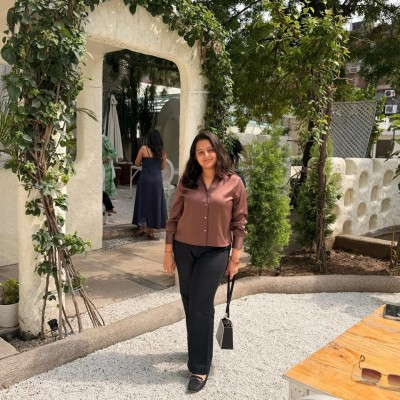

Aanya Justa
Aspiring Developer & Analyst
LinkedIn |
GitHub
About Me
I am a second-year Computer Science (Data Science) student at NMIMS Chandigarh.
I am interested in web development and data analysis, and I enjoy learning new
skills. In my free time, I like crocheting.
Qualifications & Experience
- B.Tech, Computer Science (Data Science) - NMIMS Chandigarh, Second Year
- Completed the Deloitte Job Simulation
- Executive Board Member, SGGS MUN (event management)
- Public speaking and anchoring experience at college events
- Community service volunteer at Yuvastambh NGO
Hobbies
- Building web applications
- Trying out different skills
- Crocheting
Professional Skills
- OOPs (Object-Oriented Programming)
- Public Speaking
- Event Management
- Adaptive to New Skills
Featured Projects
-
Devloke Orchard Retreat Website — a farmstay website built using
Java Spring Boot, Thymeleaf, and MySQL, deployed live on Render.
-
Student Stress Analyzer — a project to analyze and track stress
levels among students.
-
Lost and Found Management System — a system to help manage lost
and found items.
Connect With Me
LinkedIn |
GitHub